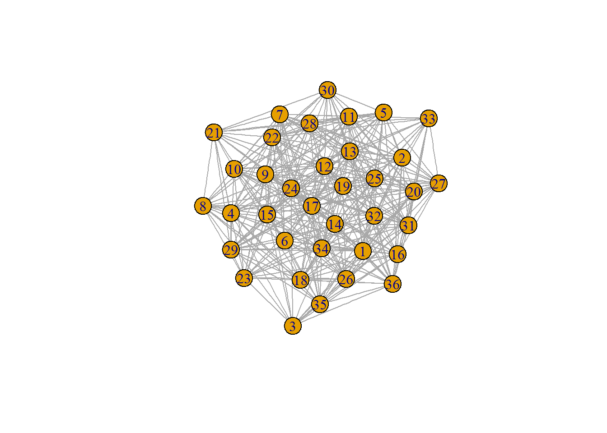

I wrote about using writer monads in the past and how they can help you make certain tasks much cleaner. I see a lot of stuff on the internet about monads and other functional programming constructs. They often try to explain the theory which can be a difficult task because they are not really a thing so much as what something can do.
There was a funny tweet that said ‘category theory is inverted math, definitions depend on nothing internal and only the things outside’.
There was also a great post that I was only able to find using the way back machine that had some really great pictures showing how monads, among other constructs, work in clear pictures.
In this picture f is the function and it is mapping things in a to things in b. It is also not doing anything else in the outside world. In R you do this all the time. Albiet lots of times they do have some impact on the outside, which can be useful and can also create a mess.
A few examples of functions.
toupper('a')## [1] "A"sqrt(16)## [1] 4Something else you can do in R, and many other languages, is apply a function to a collection of things. Here a few examples.
sapply(head(letters), toupper)## a b c d e f
## "A" "B" "C" "D" "E" "F"sapply(1:3, `+`, 1)## [[1]] 2 3 4map_dbl(1:3, `+`, 1)## [[1]] 2 3 4A functor is a thing that can be mapped over. In the above we mapped functions over lists and sets. Lists, or any type of collection, is a good starting point but it is certainly not all that can be mapped over.
This picture shows that a functor can reach into a context, the square brackets, and pull something out of the context and apply a function and deposit it in back into a context. The context can be anything, above we used the notion of a collection or a list but where it can be very useful is for data science is when the context we are talking about is being a column in a tibble.
In Haskell you have
class Functor f where
fmap :: (a -> b) -> f a -> f bwhere fmap is the mapping. In the case of a list fmap is just map or the following
map :: (a -> b) -> [a] -> [b]And so here we can see this works in R as well as Haskell, the f from fmap is now just the [ for map becuase it is a list. A data.frame like thing is a list of columns, say we want to map over each and take the second item, we would use [ function.
lapply(mtcars, `[`, 2)## $mpg
## [1] 21
##
## $cyl
## [1] 6
##
## $disp
## [1] 160
##
## $hp
## [1] 110
##
## $drat
## [1] 3.9
##
## $wt
## [1] 2.875
##
## $qsec
## [1] 17.02
##
## $vs
## [1] 0
##
## $am
## [1] 1
##
## $gear
## [1] 4
##
## $carb
## [1] 4In LYAHGG the first functor law states that if we map the id function over a functor, the functor that we get back should be the same as the original functor. The second law says that composing two functions and then mapping the resulting function over a functor should be the same as first mapping one function over the functor and then mapping the other one.
Here is an example where we start with a basic tibble, which is nothing too interesting. As a side note, a tibble is a more capable data.frame, it provides some strictness in that it wont return columns that you supply partial names, and it wont automatically create factors, and has a nicer print if you call it so that it does not try to display everything. We create a tibble with three variables, an interger, a number from one to zero and a one or zero.
df <- tibble(a = 1:10,
b = round(runif(10), 2),
y = sample(0:1, 10, replace = T))
head(df)## # A tibble: 6 x 3
## a b y
## <int> <dbl> <int>
## 1 1 0.88 1
## 2 2 0.04 0
## 3 3 0.75 0
## 4 4 0.57 0
## 5 5 0.12 0
## 6 6 0.29 1An interesting thing that we can do with a tibble that is not feasible with most (maybe any) other data.frame implementations is add a list column. Which is something that is not a basic number or character, it can even be another tibble or a data.frame. In this case we add a column of graphs, that is each row has its own graph in the column.
df$c <- lapply(1:10, function(x) erdos.renyi.game(rpois(1, 30), .5))
head(df)## # A tibble: 6 x 4
## a b y c
## <int> <dbl> <int> <list>
## 1 1 0.88 1 <S3: igraph>
## 2 2 0.04 0 <S3: igraph>
## 3 3 0.75 0 <S3: igraph>
## 4 4 0.57 0 <S3: igraph>
## 5 5 0.12 0 <S3: igraph>
## 6 6 0.29 1 <S3: igraph>df$c[1]It just shows us the class of the item in each case, so an S3 object that is of class igraph, that is because how would we display the graph here, what would its represntation look like. There are some novel appraoches for this in other cases like, like having an probability distribution as the value. We can show what a few of them look like though.
## [[1]]
## IGRAPH U--- 23 128 -- Erdos renyi (gnp) graph
## + attr: name (g/c), type (g/c), loops (g/l), p (g/n)
## + edges:
## [1] 1-- 3 1-- 4 2-- 4 3-- 4 1-- 5 2-- 5 5-- 6 2-- 7 4-- 7 1-- 8
## [11] 2-- 8 4-- 8 5-- 8 6-- 8 7-- 8 1-- 9 3-- 9 5-- 9 6-- 9 3--10
## [21] 5--10 7--10 4--11 5--11 7--11 10--11 2--12 3--12 4--12 2--13
## [31] 6--13 9--13 10--13 11--13 2--14 3--14 4--14 5--14 6--14 8--14
## [41] 9--14 10--14 1--15 3--15 5--15 6--15 8--15 9--15 11--15 12--15
## [51] 13--15 14--15 2--16 4--16 8--16 9--16 10--16 12--16 13--16 1--17
## [61] 2--17 4--17 5--17 6--17 7--17 9--17 10--17 11--17 2--18 4--18
## [71] 5--18 10--18 14--18 16--18 1--19 6--19 7--19 9--19 14--19 16--19
## + ... omitted several edgesplot(df$c[[1]])plot(df$c[[2]])
This is a collection of them, or graphs in a context. In the case of a tibble we can map over it. We use map_dbl instead of map because R does not have a strong static type system so the function centr_betw_tmax has no type signiture to say what it will return. Since we gave it a list it will return another list, but there is no need to have these numbers in a context, other than that of being a column.
df$c %>% map_dbl(centr_betw_tmax)## [1] 5082 20825 13050 10584 14415 26714 9477 4410 24642 9477So indeed it is a functor. We can use this on our tibble as well.
df %>% mutate(d = map_dbl(c, centr_betw_tmax))## # A tibble: 10 x 5
## a b y c d
## <int> <dbl> <int> <list> <dbl>
## 1 1 0.88 1 <S3: igraph> 5082
## 2 2 0.04 0 <S3: igraph> 20825
## 3 3 0.75 0 <S3: igraph> 13050
## 4 4 0.57 0 <S3: igraph> 10584
## 5 5 0.12 0 <S3: igraph> 14415
## 6 6 0.29 1 <S3: igraph> 26714
## 7 7 0.10 1 <S3: igraph> 9477
## 8 8 0.90 1 <S3: igraph> 4410
## 9 9 0.19 0 <S3: igraph> 24642
## 10 10 0.21 1 <S3: igraph> 9477Now onto applicatives. All applicatives are functors. You will commonly see that applicatives are talked about as a way to upgrade functors based on number of arguments. Functors, really fmap, takes things from one value to another, an applicative allows you to expand this beyond one to one. The number of arguments can be increased but another aspect we gain is the ability to have a function in a context. And not just a fucntion but this can even be the part that has many arguemnts, or many functions, and apply them to one or many sets of inputs.
This image only highlights one of the capabilities of applicatives. This image comes from another great source and shows many sets of input arguments. Think of the map2 function.
So they can also have many functions in a context, like a list full of them.
class (Functor f) => Applicative f where
pure :: a -> f a
(<*>) :: f (a -> b) -> f a -> f bSo we can make more functions associated to graphs. This deviates a bit from the first image unless we change our thought on waht is what. The list of functions is the second argument and function application is the function.
fns <- list(f1 = centr_betw_tmax,
f2 = assortativity.degree,
f3 = graph.adhesion,
f4 = graph.density,
# We can also partially apply them.
f5 = partial(average.path.length, directed = F, unconnected = T))So we have many functions in a context, a list, applied to one graph. We use a new type of map here since the input is a list of functions and we want a tibble out and also specify the argument it binds to.
fns %>% invoke_map_df(graph = df$c[[1]])## # A tibble: 1 x 5
## f1 f2 f3 f4 f5
## <dbl> <dbl> <dbl> <dbl> <dbl>
## 1 5082 -0.04324324 8 0.5059289 1.494071We can use many functions on many graphs, both in contexts. We can use lapply, which is a map (like) thing, to do this.
lapply(df$c, function(x) fns %>% invoke_map_df(graph = x)) %>% head(3)## [[1]]
## # A tibble: 1 x 5
## f1 f2 f3 f4 f5
## <dbl> <dbl> <dbl> <dbl> <dbl>
## 1 5082 -0.04324324 8 0.5059289 1.494071
##
## [[2]]
## # A tibble: 1 x 5
## f1 f2 f3 f4 f5
## <dbl> <dbl> <dbl> <dbl> <dbl>
## 1 20825 -0.04025899 14 0.531746 1.468254
##
## [[3]]
## # A tibble: 1 x 5
## f1 f2 f3 f4 f5
## <dbl> <dbl> <dbl> <dbl> <dbl>
## 1 13050 -0.09803276 10 0.4989247 1.501075This is cool but I it would be nice if they were included back into the tibble instead of having a bunch of new tibbles. If we add this back into the context we have expanded past the functor and the applicative. This is what it means to be a monad, cs def and math def, we are able to pull something out of a context evaluate it and then place it back into that type of context so that many of them can be composed together into a chain. We could also do this without needing the intermediate applicative, that would also be a monad.
class Monad m where
return :: a -> m a
(>>=) :: m a -> (a -> m b) -> m b
(>>) :: m a -> m b -> m b
x >> y = x >>= \_ -> y
fail :: String -> m a
fail msg = error msgdf %>% mutate(d = lapply(c, function(x) fns %>% invoke_map_df(graph = x)))## # A tibble: 10 x 5
## a b y c d
## <int> <dbl> <int> <list> <list>
## 1 1 0.88 1 <S3: igraph> <tibble [1 x 5]>
## 2 2 0.04 0 <S3: igraph> <tibble [1 x 5]>
## 3 3 0.75 0 <S3: igraph> <tibble [1 x 5]>
## 4 4 0.57 0 <S3: igraph> <tibble [1 x 5]>
## 5 5 0.12 0 <S3: igraph> <tibble [1 x 5]>
## 6 6 0.29 1 <S3: igraph> <tibble [1 x 5]>
## 7 7 0.10 1 <S3: igraph> <tibble [1 x 5]>
## 8 8 0.90 1 <S3: igraph> <tibble [1 x 5]>
## 9 9 0.19 0 <S3: igraph> <tibble [1 x 5]>
## 10 10 0.21 1 <S3: igraph> <tibble [1 x 5]>But it is a list, that is because we put it back into the context but not in the most usable way. We can use unnest to make it look more like normal, which is just a contortion.
df %>%
mutate(d = lapply(c, function(x) fns %>% invoke_map_df(graph = x))) %>%
unnest(d)## # A tibble: 10 x 9
## a b y c f1 f2 f3 f4
## <int> <dbl> <int> <list> <dbl> <dbl> <dbl> <dbl>
## 1 1 0.88 1 <S3: igraph> 5082 -0.043243243 8 0.5059289
## 2 2 0.04 0 <S3: igraph> 20825 -0.040258988 14 0.5317460
## 3 3 0.75 0 <S3: igraph> 13050 -0.098032760 10 0.4989247
## 4 4 0.57 0 <S3: igraph> 10584 -0.048020478 8 0.4679803
## 5 5 0.12 0 <S3: igraph> 14415 -0.016253009 11 0.4858871
## 6 6 0.29 1 <S3: igraph> 26714 -0.085894885 13 0.4939271
## 7 7 0.10 1 <S3: igraph> 9477 0.008438717 9 0.4656085
## 8 8 0.90 1 <S3: igraph> 4410 -0.172905028 6 0.5064935
## 9 9 0.19 0 <S3: igraph> 24642 -0.009269678 10 0.4836415
## 10 10 0.21 1 <S3: igraph> 9477 -0.047045777 9 0.5264550
## # ... with 1 more variables: f5 <dbl>We could also override either the pipe or mutate to lift everything into a more usable form. At first that may appear to be just syntactic sugar or aesthetics but that is what makes monads so usable in places like Haskell, thelanguage accomodates for them very well. If we could augment the pipes to pipe in a more natural or type specific way we could do all of this very easily or naturally. Anyway, we now have most all of the components of category theory, not really but enough power to make all the rest. So we can have complex types of data like networks or other more complicated constructs and use them in a normal data science workflow.
The next step would be to create the set of extractors that would create all the relavent features for a network or the construct in question. Then given a set of these feature extractors, we could apply it to our dataset of networks and then use the typical feature selection process and supervised learning algorithms and train/test constructs.
Often when you have more complicated entities the commone machined learning is not done as the ability to use common models no longer applies when you do not have something that is rectangular like Excel were each row is an entity and each column is a variable. Here we have a complicated structure that is our entity. When things like this do occur they usually require a large effort to build training algorithms that can account for such complexity.
A thought I had was that we can use the machinary from Category Theory to overcome this hurdle. If you are not familiar with this area of math the gist from Wikipedia may suffice, The study of categories is an attempt to axiomatically capture what is commonly found in various classes of related mathematical structures by relating them to the structure-preserving functions between them.
Another aspect of this which pervades lots of data science is the notion of being independent and identiically distributed, IID, observations. The Bayesian framework provides a similar notion called exchangeable, meaning that you can exchange any two observations and nothing is lost. If you think about things like time series data, they do not adhere to this, you can’t switch the value of a stock from two months ago with that of yesterday and have the same time series. If you have the goal of predicting mortgage defaults though, you are much closer to this, you can swap two mortgages in a data set and not lose anything (ignoring the notion of people who have multiple mortgages). But you start to run into trouble when you bring the time series of mortgage payments into the fold, you usually have to squish it down into a single parameter, or a collection of parameters but this is always done in an ad hoc way and never keeps the time series in a context close to the data being used to model, which is error prone and creates complexity and technical debt. The machinary duscussed here should allow yopu to overcome these issues.
If we could take all of the structure that currently exists in supervised machine learning and apply it to things that have the same higher level mathematical structure, we could expidite the process. How would we do this? We need to create a morphism, or a structure preserving mapping from rows of basic entities to the more complicated entity.
There is even more we could pull from this area, which I wont dive too far into but just brong up the idea. There is a whole world past functions, like arrows, functions are really just one type of arrow. Arrows can have a function that has a context associated with it as well. My thought was we could extend these notions and actually upgrade to the piping contructs to give arrow like capabilities. Look at the images belwow which tryo visually express the methods that arrows can accomodate. Imagine being able to use these to define training and testing sets, or even multiple bootstraped sets. Certain tasks happen to the training side while others to the test side.
I hope to look more into that in the future but really just wanted to the first part of my thoughts down here.